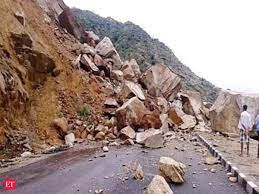

North

Affected regions:
Jammu and Kashmir, Himachal Pradesh, Uttarakhand
Recent disaster
Name : Jammu Landslide
Date : Sept 04 , 2022
Cause : Jammu city recorded 95.7 mm of rain which caused several landslides blockind the 270-km
Jammu-Srinagar national highway in Ramban district
Response : Despite incessant rains, the concerned agency pressed men and machines to remove the
debris from the road to make it traffic worthy once again.
Damage :The landslide struck the 270-km highway, the only all-weather road linking Kashmir with the rest
of the country, at Kharpora near Banihal around 1.40 pm, forcing suspension of traffic which was plying from
Srinagar to Jammu.
Deaths : No deaths were reported